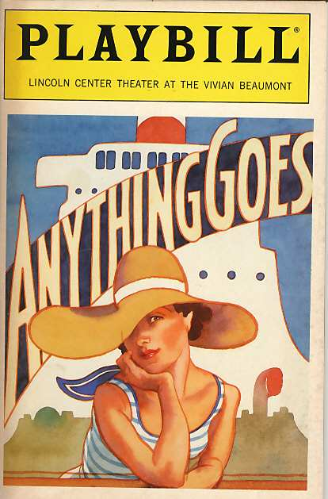

The Human History Project
Posted by ehopkins on December 17, 2015
Today’s post marks the occasion of the Second International Workshop on the Human History Project, which took place a week ago on Saturday, December 12. While not specifically SIMSSA-related, this is an exciting Digital Humanities project, and many of our researchers are also involved in it. I was able to attend so I could write this post and provide you some highlights from the day.
The premise of the Human History Project is simple enough: store the entirety of documented human history in a single database, accessible online. Books, receipts, newspaper articles, lists, anything and everything. Carrying this out, however, is a long and involved process. Some key concepts are:
- Using Natural Language Processing: for handling large amounts of unstructured data. Named-entity extraction, events extraction, etc.
- Linked open data: using Resource Description Framework (RDF) and querying with SPARQL
- Crowdsourcing
The event was well-attended and featured several guest speakers who came to share their latest work related to the project.
First up, Sergio Oramas (a PhD Student at the Universitat Pompeu Fabra) presented “A brief introduction to Natural Language Processing.” He discussed the semantic web, turning unstructured data/pages (like much of Wikipedia) into structured, linked data (like DBpedia). Some of us are more familiar with Natural Language Processing while some of us are still new to it so it was a useful background.

Next, Susan Forscher Weiss and Ichiro Fujinaga gave “Digital prosopography of renaissance musicians: A progress report.” Prosopography is a historiographical method that identifies a group of people and works to determine relationship between them in a historical and social context, whether they are famous or not. Susan illustrated the concept with theatre playbills. Tracking just the different personnel working to produce the shows, a relational network can be built, revealing quite a lot about the theatre community in a given time period.

Digital prosopography, then, requires creating a structured database that can be queried. In the case of renaissance musicians, records of payment are a key source. Ichiro identified collections of existing online biographies; there are quite a few but they are largely created by hand and difficult to scale up as a result.
Following that, Serge ter Braake from the University of Amsterdam continued the prosopography theme with “Biographical dictionaries and prosopography of famous people: Opportunities and pitfalls.” He emphasized that prosopography doesn’t have to focus on only one person. He discussed other biographical dictionaries, from early specialized examples in the 16th-18th centuries to the 19th Century biographical dictionary “boom” that went hand-in-hand with nation-building efforts at the time. Even “universal” dictionaries were skewed towards their countries of origin.
The other important question Serge emphasized was the challenge of deciding who is noteworthy in history. It’s not an objective question at all, and many biographical dictionaries reflect these judgements in whether or not someone is included and then also the length of their entries. Even place names show clear national bias – many former colonies were named after European towns, for example, and the choice of name in a dictionary reflects that.
Jason Boyd from Ryerson University gave a talk on “Linking texts and lives: The Texting Wilde and SLEEPR Projects.” The Texting Wilde is an open online repository of early biographical texts about Oscar Wilde.
Using the example of an Oscar Wilde story about an event in the author’s own life, he discussed the challenges of tracking different events: there is both the event of the activities that inspired the story happening, and the event of the story being told. Distinguishing fiction and fact becomes murky quite quickly!
He also discussed the REED (Records of Early English Drama) online resource, and how linking and indexing the subject matter of these records reveals a lot about the lives of the actors and other personnel involved in these productions, including musicians. He also addressed the tactic of crowdsourcing and of getting the public to contribute to these efforts.
Sergio Oramas returned to discuss “Information Extraction for the Music Domain.” He outlined a hierarchy of how information is stored: physical items (books, scores, pictures), digitized items (pdf, mp3, jpg), machine-readable formats (XML, HTML, midi), and finally semantified items (structured databases).
He described the challenge of disambiguation: Parilla de Perez is the name of a flamenco guitarist, but on its own “parilla” is a kind of barbecued meat and “Perez” is a town! Sergio also described the process of creating of a structured database for flamenco music called FLABASE.
The final talk of the day was Matt Milner, assistant director of the McGill Centre for Digital Humanities. He discussed the idea of developing historical social networks. He also framed the discussion in terms of considering manual versus automated scholarly labour, and the influence of domain experts in creating lists of entities for subsequent name entity recognition processes. He gave us an overview of EEBO TCP, the Early English Books Online Text Creation Project, the DREaM Project (featured on our last blog post), and Nanohistory.org. Nanohistory is a new project, creating an environment where historians, scholars, and anyone else interested can work together to build online historical cultural networks, documenting events.
In the roundtable discussion, we talked about some bigger challenges with the project. For example, measuring time! Calendars change throughout history. Ichiro spoke about developing online pictionaries to crowdsource all the various names for things, whether they’re musical instruments or rivers. Matt Milner brought up the need to develop better ways of collaborating and sharing findings as we build large datasets. Important questions were brought up: What gets conserved? What gets digitized first? And we discussed using random (or complete) sampling as an effort to minimize bias.
Thank you to all our presenters who travelled to Montreal, Vi-An and Alex for coordinating the wonderful lunch, all those in attendance at the event!